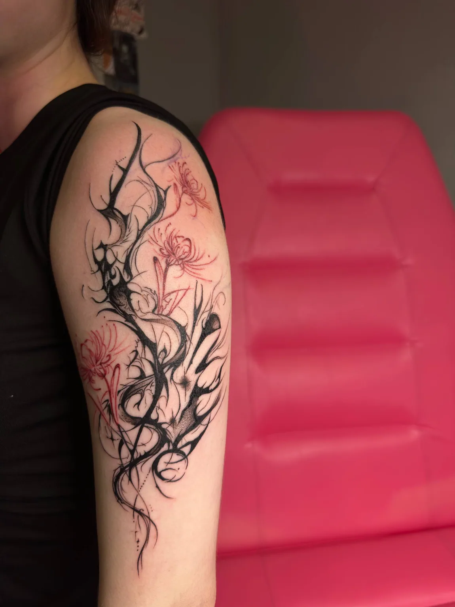
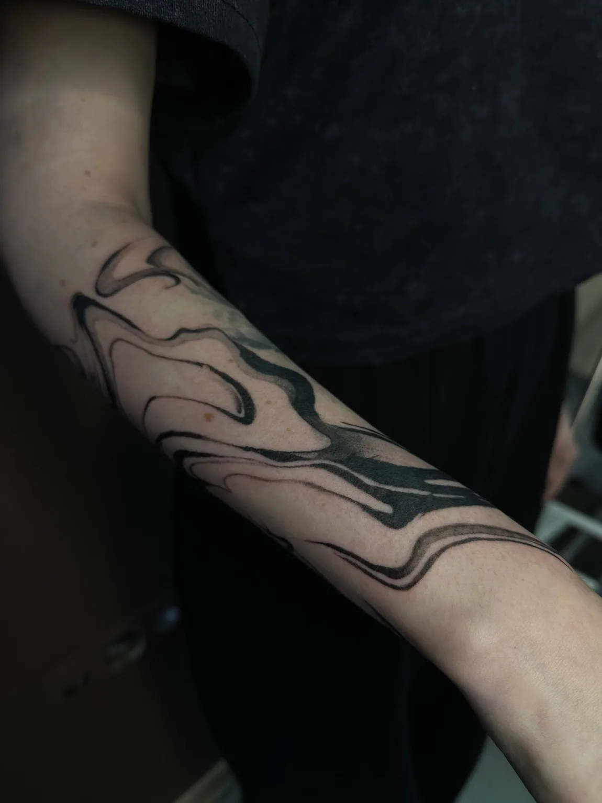
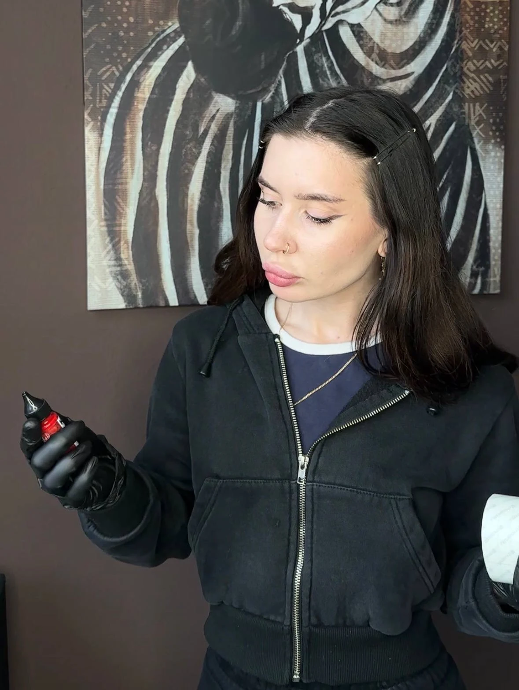
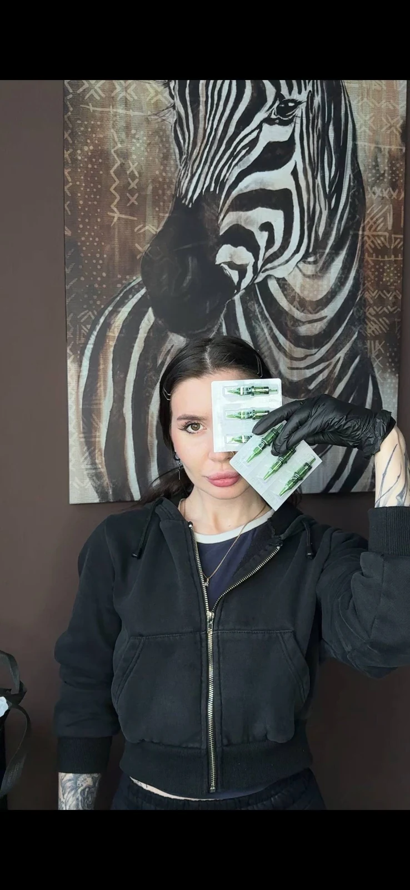
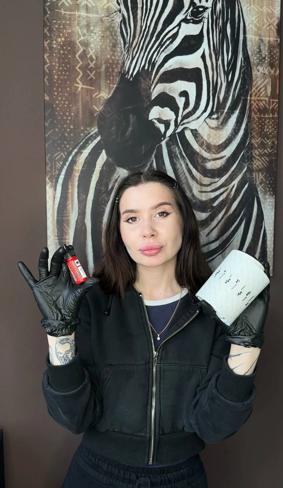
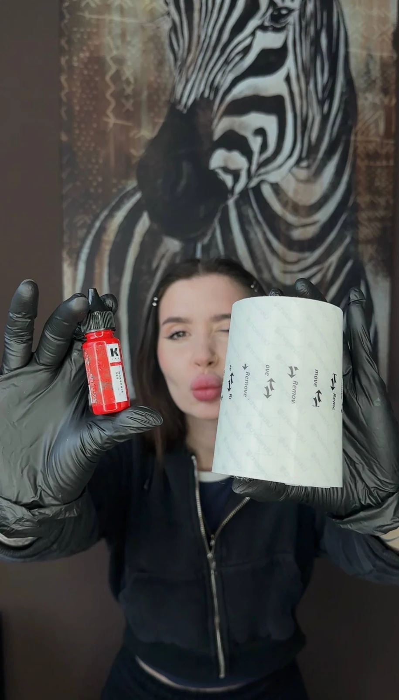

ТВОЯ
ИСТОРИЯ.
НА КОЖЕ.
Татуировка — больше, чем рисунок. Это часть тебя. Давай сделаем её по-настоящему твоей.

REAL INK / REAL STORIES
01 — ПОРТФОЛИО
ГОВОРЯТ РАБОТЫ.
Никаких стоковых картинок — только настоящие татуировки.
WORK / 2026
02 — НАПРАВЛЕНИЯ
НА ОДНОЙ ВОЛНЕ.
От тонкой деликатной линии до смелой чёрной композиции — выбираем то, что откликается тебе.
Fine line
Тонкие линии и деликатные рисунки.
Blackwork
Плотные чёрные композиции и выразительный контраст.
Dark ornamental
Орнаменты, графика, ритм и форма.
Custom
Индивидуальное обсуждение идеи и её воплощения.
Large scale
Крупные композиции и большие проекты.
Cover-up
Перекрытие старой татуировки новым рисунком. Возможность, размер и эскиз обсуждаем индивидуально.
Обсудить перекрытие



ТАТУ-МАСТЕР
03 — ЗНАКОМСТВО
ПРИВЕТ,
Я АЛИНА.
Всем привет! Меня зовут Алина, и я тату-мастер.
Мой путь в мире татуировки начался с обучения у своего тату-мастера.
Я работаю в разных стилях, включая графику, минимализм, абстракцию и неотрайбл. Постоянно стремлюсь расширять горизонты и открыта для новых стилей и творческих исследований.
Я верю, что каждая татуировка — это уникальное искусство, которое несёт особое значение для каждого клиента. Моя цель — помочь тебе выразить индивидуальность и историю через татуировку на коже.
04 — ПРАЙС
СКОЛЬКО СТОИТ?
Каждая татуировка индивидуальна. Здесь — ориентиры, точную стоимость скажу после обсуждения идеи.
Большие
Масштабные работы, которые могут потребовать нескольких сеансов.
Окончательная стоимость зависит от эскиза, размера и места нанесения. Предоплата — 1 000 ₽. При отмене менее чем за 3 дня до сеанса предоплата не возвращается.
05 — КАК ВСЁ ПРОХОДИТ
ОТ ИДЕИ ДО ТАТУ.
Расскажи идею
Опиши, что хочется, и прикрепи референс.
Обсудим детали
Эскиз, размер, место и ориентировочная цена.
Выберем дату
Согласуем удобный день и время лично.
Встретимся
Перенесём идею на кожу во время сеанса.
Уход за тату
Подскажу, как ухаживать за свежей работой.
07 — ОТВЕТЫ НА ВОПРОСЫ
БЕЗ ЛИШНИХ
ВОПРОСОВ.
Собрала самое важное, что полезно знать перед первой встречей.
НАПИШИ МНЕ НАПРЯМУЮ.Написать мне
01Нужен ли готовый эскиз?
02Можно ли перекрыть старую татуировку?
03Как узнать точную стоимость?
04Выбранная дата — уже запись?
05Нужна ли предоплата?
06Что важно сделать перед сеансом?
07Как ухаживать за татуировкой?
08 — ВАЖНАЯ ИНФОРМАЦИЯ
ПЕРЕД СЕАНСОМ.
Небольшой чек-лист, чтобы знакомство с новой татуировкой прошло комфортнее.
01 / ПОДГОТОВКАБез алкоголя и энергетиков
Постарайся исключить их за два дня до сеанса.
02 / ПОДГОТОВКАПозаботься о коже
Если кожа сухая, увлажняй место будущей татуировки за два дня до сеанса.
03 / ПОДГОТОВКАВыспись и поешь
Полноценный сон и приём пищи перед визитом помогут чувствовать себя лучше.
04 / ПОДГОТОВКАОдежда = комфорт
Выбирай свободную, удобную одежду, в которой сможешь провести весь сеанс.
05 / ПОДГОТОВКАПредупреди об опоздании
Если пришёл раньше или задерживаешься — пожалуйста, напиши заранее.
06 / ПОДГОТОВКАПриходи один
Сеансы проходят без сопровождения, чтобы ничто не отвлекало от процесса.
А КАК ЗАЖИВАЕТ
ТАТУИРОВКА?
После сеанса я расскажу, как правильно ухаживать за татуировкой и на что обратить внимание в первые дни.
Я дам персональные рекомендации по уходу: как аккуратно очищать татуировку, чем пользоваться и чего лучше избегать в период заживления.
Уход по моей индивидуальной рекомендации09 — ЗАЯВКА НА ТАТУИРОВКУ
ЕСТЬ ИДЕЯ?
ДАВАЙ ОБСУДИМ.
Заполни небольшую анкету, добавь эскиз и укажи удобную дату. У меня индивидуальный график, поэтому окончательное время мы согласуем лично.
НА СВЯЗИ